Taller en Porto Alegre · R. João Guimarães, 31 — Rio Branco
Catálogo
Obras para encargar
Elige una obra como referencia y encarga tu cuadro pintado a mano por Silvia, en el tamaño que quieras. No hay venta online: Silvia responde con presupuesto y plazo por WhatsApp o e-mail.
Cada obra tiene un número. Para pedirla o resolver dudas, basta indicar el número.
 Rosas blancas en jarrón de cristalColección Studioai
Rosas blancas en jarrón de cristalColección Studioai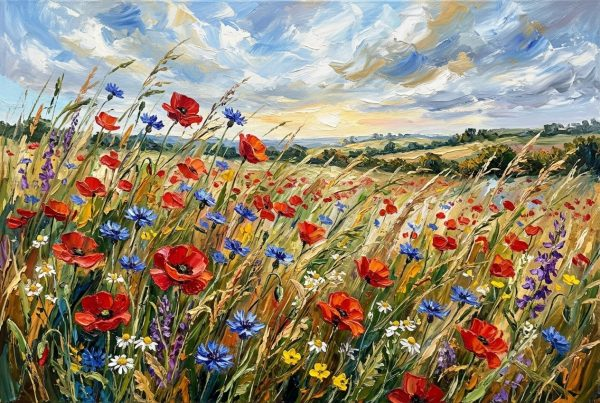
Campo de amapolasColección Studioai Peonía rosaColección Studioai
Peonía rosaColección Studioai Hortensias azules en la jarraColección StudioaiGirasoles en jarra rústicaColección Studioai
Hortensias azules en la jarraColección StudioaiGirasoles en jarra rústicaColección Studioai Iris y liriosColección Studioai
Iris y liriosColección Studioai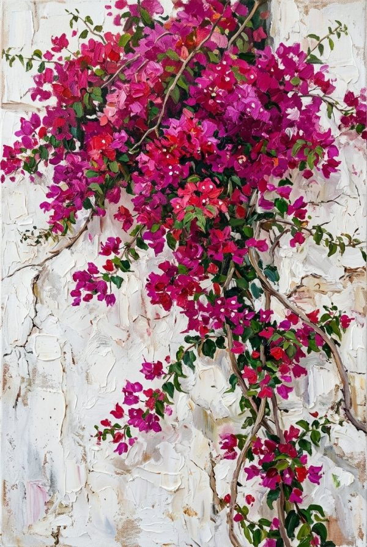
Buganvilla magenta en el muro blancoColección Studioai Lavanda y manzanillaColección Studioai
Lavanda y manzanillaColección Studioai Tulipanes naranjas en maceta de barroColección Studioai
Tulipanes naranjas en maceta de barroColección Studioai Ramo de primaveraColección Studioai
Ramo de primaveraColección Studioai Cerezas e higosColección Studioai
Cerezas e higosColección Studioai Limones en el plato azulColección Studioai
Limones en el plato azulColección Studioai Sandía y uvasColección Studioai
Sandía y uvasColección Studioai Peras y granadasColección Studioai
Peras y granadasColección Studioai Cesta de naranjasColección Studioai
Cesta de naranjasColección Studioai Café, cruasán y fresasColección Studioai
Café, cruasán y fresasColección Studioai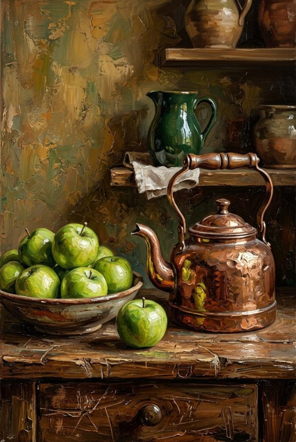
Manzanas verdes y tetera de cobreColección Studioai Frutas tropicalesColección Studioai
Frutas tropicalesColección Studioai Limonada con hierbabuenaColección Studioai
Limonada con hierbabuenaColección Studioai Aguacates, limones y margaritasColección Studioai
Aguacates, limones y margaritasColección Studioai Olas turquesaColección Studioai
Olas turquesaColección Studioai Faro en las rocasColección Studioai
Faro en las rocasColección Studioai Barcos de pesca al amanecerColección Studioai
Barcos de pesca al amanecerColección Studioai Sombrillas en la playaColección Studioai
Sombrillas en la playaColección Studioai Laguna tropicalColección Studioai
Laguna tropicalColección Studioai Gaviotas al atardecerColección Studioai
Gaviotas al atardecerColección Studioai Pasarela en las dunasColección Studioai
Pasarela en las dunasColección Studioai Costa rocosa de mar esmeraldaColección Studioai
Costa rocosa de mar esmeraldaColección Studioai Velero en el mar azulColección Studioai
Velero en el mar azulColección Studioai Marea baja al atardecerColección Studioai
Marea baja al atardecerColección Studioai Camino entre colinas floridasColección StudioaiPinos en la nieblaColección StudioaiLago entre montañas nevadasColección Studioai
Camino entre colinas floridasColección StudioaiPinos en la nieblaColección StudioaiLago entre montañas nevadasColección Studioai Viñedo en otoñoColección Studioai
Viñedo en otoñoColección Studioai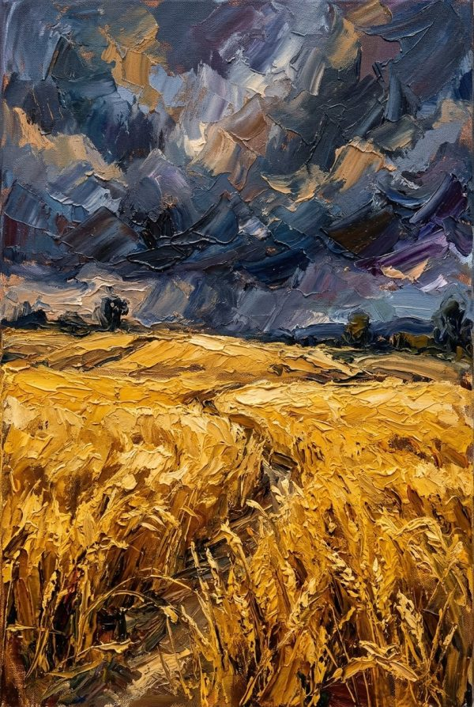
Trigal bajo la tormentaColección Studioai Campo de lavandaColección Studioai
Campo de lavandaColección Studioai Abedules en otoñoColección Studioai
Abedules en otoñoColección Studioai Cascada en el bosqueColección Studioai
Cascada en el bosqueColección Studioai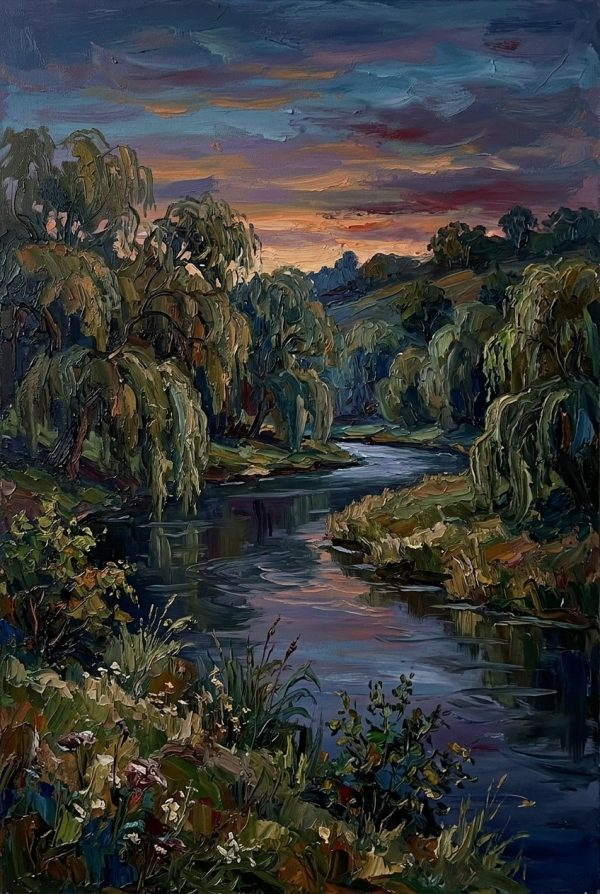
Río con saucesColección Studioai Pampa al atardecerColección Studioai
Pampa al atardecerColección Studioai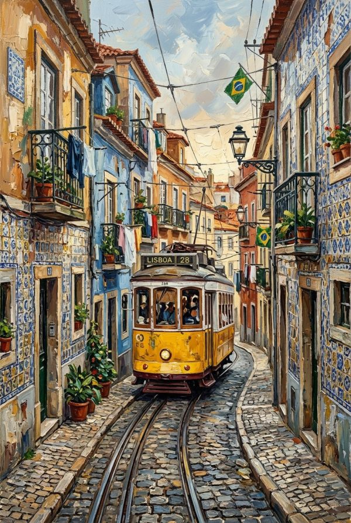
Tranvía amarillo en LisboaColección StudioaiTejados de París al anochecerColección StudioaiCanal de Venecia con góndolasColección Studioai Caserío colonialColección Studioai
Caserío colonialColección Studioai Mercado de flores bajo la lluviaColección Studioai
Mercado de flores bajo la lluviaColección Studioai Pueblo griegoColección StudioaiTrompeta en pinceladas sueltasColección Studioai
Pueblo griegoColección StudioaiTrompeta en pinceladas sueltasColección Studioai N.º 163 · Gauchos a caballo
N.º 163 · Gauchos a caballo N.º 162 · Avenida florida
N.º 162 · Avenida florida N.º 161 · Atardecer en el lagoN.º 159 · Mujer y perro junto al mar
N.º 161 · Atardecer en el lagoN.º 159 · Mujer y perro junto al mar N.º 157 · Narcisos
N.º 157 · Narcisos N.º 156 · Tríptico: atardecer en la playa
N.º 156 · Tríptico: atardecer en la playa N.º 155 · Ramo de margaritas
N.º 155 · Ramo de margaritas N.º 154 · Bicicleta con flores
N.º 154 · Bicicleta con flores N.º 153 · Mar y acantilado
N.º 153 · Mar y acantilado N.º 152 · Naturaleza muerta en azul
N.º 152 · Naturaleza muerta en azul N.º 150 · Ramo lila y azul
N.º 150 · Ramo lila y azul N.º 148 · Enlazador a caballo
N.º 148 · Enlazador a caballo N.º 147 · Cascada de flores amarillas
N.º 147 · Cascada de flores amarillas N.º 145 · Atardecer en el Guaíba
N.º 145 · Atardecer en el Guaíba N.º 141 · Ajo y limón
N.º 141 · Ajo y limón N.º 140 · Calle antigua al anochecer
N.º 140 · Calle antigua al anochecer N.º 139 · Flores en el taller
N.º 139 · Flores en el taller N.º 136 · Flores blancas en la noche
N.º 136 · Flores blancas en la noche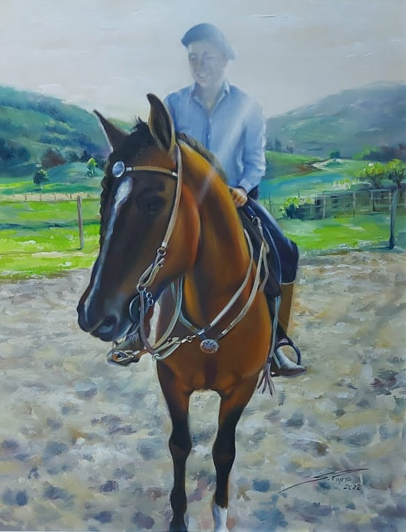
N.º 135 · Gaucho a caballo N.º 133 · Caserón en grafito
N.º 133 · Caserón en grafito N.º 131 · Tulipanes
N.º 131 · Tulipanes N.º 130 · Playa con cocoteros
N.º 130 · Playa con cocoteros N.º 128 · Flores en relieve en el jarrón
N.º 128 · Flores en relieve en el jarrón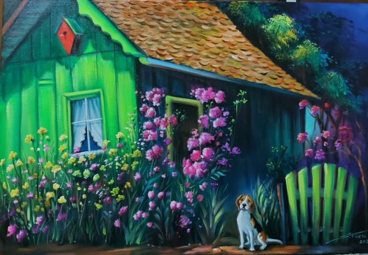
N.º 126 · Casa verde con jardín N.º 123 · Flores azules y doradas
N.º 123 · Flores azules y doradas N.º 122 · Flores en jarrón de cristal
N.º 122 · Flores en jarrón de cristal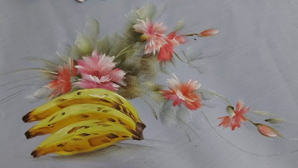
N.º 121 · Plátanos y flores rosadas N.º 120 · Jardín tropical
N.º 120 · Jardín tropical N.º 119 · Papaya y flores
N.º 119 · Papaya y flores N.º 118 · Granada y flores blancas
N.º 118 · Granada y flores blancas N.º 117 · Higos y flores
N.º 117 · Higos y flores N.º 116 · Kiwi y pajarito
N.º 116 · Kiwi y pajarito N.º 115 · Marañón y flores
N.º 115 · Marañón y flores N.º 114 · Ciruelas y hojas
N.º 114 · Ciruelas y hojas N.º 112 · Manzana verde y flores
N.º 112 · Manzana verde y flores N.º 111 · Abstracto en negro y dorado
N.º 111 · Abstracto en negro y dorado N.º 110 · Uvas y margaritas
N.º 110 · Uvas y margaritas N.º 109 · Pescador en la playa
N.º 109 · Pescador en la playa N.º 108 · Cocos y flores
N.º 108 · Cocos y flores N.º 107 · Mercado en calle antigua
N.º 107 · Mercado en calle antigua N.º 106 · Calle florida con toldos
N.º 106 · Calle florida con toldos N.º 104 · Búfalo y león
N.º 104 · Búfalo y león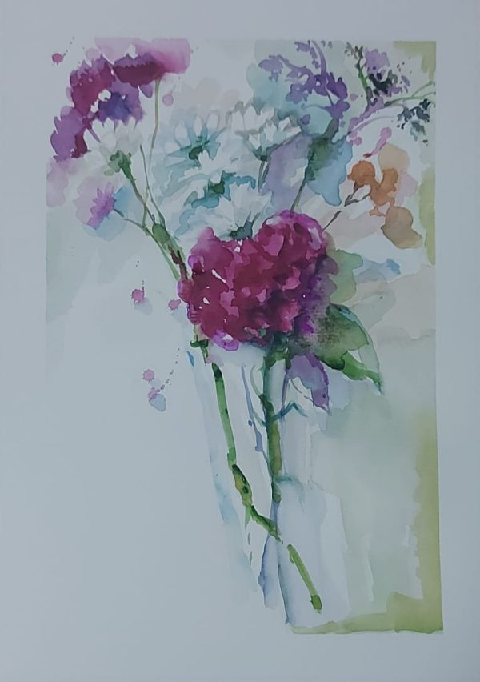
N.º 101 · Flores en acuarela N.º 100 · Explosión de flores
N.º 100 · Explosión de flores N.º 97 · Puerta azul con enredadera
N.º 97 · Puerta azul con enredadera N.º 96 · Flores al viento
N.º 96 · Flores al viento N.º 95 · Ramo de flores ligero
N.º 95 · Ramo de flores ligero N.º 94 · Peonías blancas
N.º 94 · Peonías blancas N.º 92 · Flores lilas en relieve
N.º 92 · Flores lilas en relieve N.º 91 · Playa con globo
N.º 91 · Playa con globo N.º 90 · Pescadores en el barco
N.º 90 · Pescadores en el barco N.º 89 · Lago azul al amanecer
N.º 89 · Lago azul al amanecer N.º 87 · Jarrón azul con flores
N.º 87 · Jarrón azul con flores N.º 86 · Fantasía de colores
N.º 86 · Fantasía de colores N.º 85 · Veleros en la bahía
N.º 85 · Veleros en la bahía N.º 82 · Orquídeas
N.º 82 · Orquídeas N.º 80 · Flores en transparencia
N.º 80 · Flores en transparencia N.º 79 · Peones a caballo al atardecer
N.º 79 · Peones a caballo al atardecer N.º 77 · Padre e hijo en la calle de noche
N.º 77 · Padre e hijo en la calle de noche N.º 72 · Edificio de cristal y jardín
N.º 72 · Edificio de cristal y jardín N.º 70 · Garza al atardecer
N.º 70 · Garza al atardecer N.º 69 · Noche en el patio colonial
N.º 69 · Noche en el patio colonial N.º 67 · Retrato de pug
N.º 67 · Retrato de pug N.º 66 · Jarrón de flores en azul
N.º 66 · Jarrón de flores en azul N.º 65 · Velero al atardecer
N.º 65 · Velero al atardecer N.º 64 · Casa de madera en otoño
N.º 64 · Casa de madera en otoño N.º 56 · Molino en el campoN.º 55 · Paseo bajo la lluvia al atardecer
N.º 56 · Molino en el campoN.º 55 · Paseo bajo la lluvia al atardecer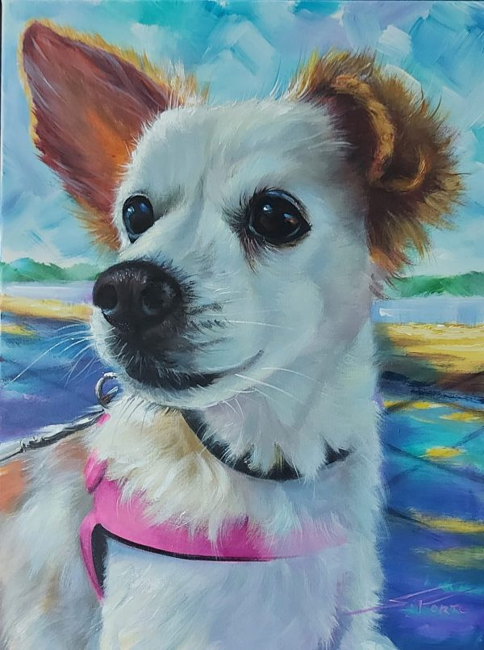
N.º 54 · Retrato de perritoN.º 52 · Abstracto en rojo y oro N.º 51 · Molinillo de café y violetas
N.º 51 · Molinillo de café y violetas N.º 50 · Noche de lluvia en París
N.º 50 · Noche de lluvia en París N.º 49 · Capilla en el campo
N.º 49 · Capilla en el campo N.º 48 · Gata con corona de flores
N.º 48 · Gata con corona de flores N.º 47 · Abstracto en azul y ámbar
N.º 47 · Abstracto en azul y ámbar N.º 46 · Plátanos y flores lilas
N.º 46 · Plátanos y flores lilas N.º 45 · Atardecer sobre la ciudad
N.º 45 · Atardecer sobre la ciudad N.º 44 · Ramo colorido en relieve
N.º 44 · Ramo colorido en relieve N.º 32 · Abstracto en rojo
N.º 32 · Abstracto en rojo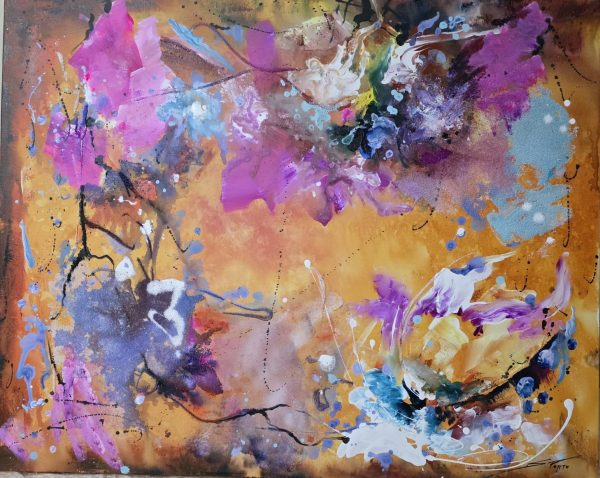
N.º 31 · Abstracto en lila y dorado N.º 27 · Pájaro sobre fondo dorado
N.º 27 · Pájaro sobre fondo dorado N.º 26 · Perro de pelo negro
N.º 26 · Perro de pelo negro N.º 22 · Esquiadores en la nieve
N.º 22 · Esquiadores en la nieve N.º 21 · Luna llena sobre las rocas
N.º 21 · Luna llena sobre las rocas N.º 20 · Canal de Venecia
N.º 20 · Canal de Venecia N.º 19 · Casa amarilla con jardín
N.º 19 · Casa amarilla con jardín N.º 18 · Flores de primavera, detalleN.º 17 · Jarrón verde con flores azules
N.º 18 · Flores de primavera, detalleN.º 17 · Jarrón verde con flores azules N.º 16 · Jarrón con flores tropicales
N.º 16 · Jarrón con flores tropicales N.º 15 · Flores de primavera en pan de oro
N.º 15 · Flores de primavera en pan de oro N.º 14 · Paraguas amarillo
N.º 14 · Paraguas amarillo N.º 13 · Tranvía y bicicleta bajo la lluvia
N.º 13 · Tranvía y bicicleta bajo la lluvia N.º 12 · Mujer de rojo en la calle antigua
N.º 12 · Mujer de rojo en la calle antigua N.º 11 · Mercado de flores
N.º 11 · Mercado de flores N.º 4 · Perro de ojos azules
N.º 4 · Perro de ojos azules N.º 3 · Caballo con rienda
N.º 3 · Caballo con rienda N.º 2 · Flores naranjas junto al mar
N.º 2 · Flores naranjas junto al mar N.º 1 · Mujer con paraguas en la floristería
N.º 1 · Mujer con paraguas en la floristería Ciclista en la calle florida
Ciclista en la calle florida¿No encontraste lo que buscas? Silvia pinta a partir de tu foto o de tu idea.
Encargar por WhatsApp Enviar e-mail a Silvia© 2026 Silvia Porto — Artes Plásticas · Porto Alegre, RSEncargos · WhatsApp (51) 99283-8195 · silviabeust1@gmail.comDesarrollado por Diego Kasper - +Cuadros